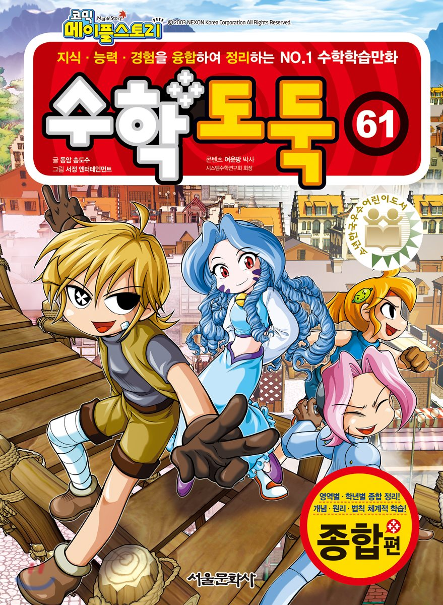

프로젝트 기획
기확안 작업
1. 기획은 웹콘텐츠의 설계도
1) 목표를 설정
2) 목표를 성취하기 위한 필수 단계
2. 기확자의 뚜렷한 주관과 독착성이 담긴 결과물들
1) 아이디어는 번뜩이는 섬광
2) 평소에 꾸준히 관심을 기울여야 한다
기확안 내용 작성
1. 안좋은 기획안
1) 자료만 옮겨붙인 설득력 없는 내용
2) 제작목적이 불분명하다
3) 내용에대한 전달력이 떨어진다
2. 좋은 기확안
1) 제작해야 할 타당성을 같춘다
2) 적합한 내용으로 일못요연한 구성 및 전달
아이디어 도출
아이디어 발상과정
아이디어는 자신이 가진 지식과 경험의 범위 내에서만 떠오른다
아이디어를 생각해 내는 방법에는 정답이 없다
좌뇌형, 우뇌형 인간의 특징
누구나 꾸준한 훈련을 통해 양쪽 뇌의 기능을 고르게 활용할 수 있다
아이디어 발상
마인드 매핑
핵심문제와 관련된 여러 요인들을 발견하고, 관련 요인들에서 아이디어의 단서를 찾고자 할떄 활용한다
